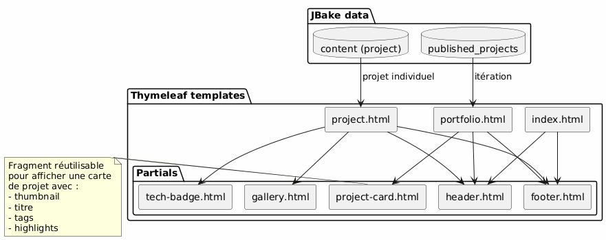
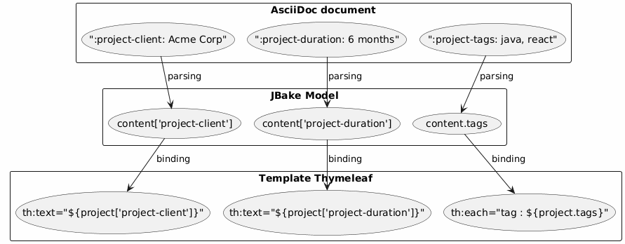

Architecture Portfolio JBake - Vision and Use Cases
Published on 15 January 2026
Architectural vision
Guiding principle
The architecture is based on the principle of separation of concerns:
-
Content : structured AsciiDoc files with rich metadata
-
Presentation: reusable Thymeleaf templates
-
Data : model automatically extracted by JBake from AsciiDoc attributes
-
Style: Bootstrap 5 for visual consistency
Strategic choice: AsciiDoc for the portfolio
| Criterion | Advantage |
|---|---|
Coherence |
Same format as the blog posts |
Metadata |
Structured and extensible attributes ( |
Maintainability |
Simple text editing, Git-versionable |
Flexibility |
May contain rich content (tables, code, images) |
Templating |
JBake automatically extracts attributes for Thymeleaf |
Data model
Each portfolio project is an AsciiDoc document with:
-
Header Metadata : structured information (client, duration, technologies, etc.)
-
Body of the document: narrative description, challenges, solutions, results
-
Custom attributes : prefixed`project-*`for automatic extraction

Detailed Use Cases
UC1 : Add an item to the portfolio
Nominal flux
Failed to generate image: PlantUML preprocessing failed: [From <input> (line 4) ] @startuml skinparam backgroundColor #FEFEFE actor Développeur as dev participant "Editor ^^^^^ Syntax Error? (Assumed diagram type: sequence) @startuml skinparam backgroundColor #FEFEFE actor Développeur as dev participant "Editor Text" as editor participant "File AsciiDoc" as file participant "JBake\nEngine" as jbake participant "Site Static" as site dev -> editor : Créer nouveau fichier activate editor editor -> file : portfolio/nouveau-projet.adoc activate file dev -> editor : Rédiger en-tête avec métadonnées\n(titre, type=project, status=published,\nattributs project-*) dev -> editor : Rédiger contenu narratif\n(contexte, défis, solutions) dev -> editor : Ajouter images dans assets/img/portfolio/ editor -> file : Sauvegarder deactivate editor dev -> jbake : Lancer build (jbake -b) activate jbake jbake -> file : Lire et parser jbake -> jbake : Extraire métadonnées jbake -> jbake : Convertir AsciiDoc → HTML jbake -> jbake : Appliquer template project.html jbake -> jbake : Ajouter à la liste portfolio.html jbake -> site : Générer pages statiques deactivate jbake dev -> site : Vérifier résultat activate site site --> dev : Afficher projet deactivate site @enduml
Template of the file to be created
The developer creates`content/portfolio/nom-projet.adoc`with a standardized structure:
-
Header with all required attributes
-
Standardized sections (Context, Challenges, Solutions, Results)
-
Consistent image nomenclature
Validation points
-
The required attributes are present (
jbake-type,jbake-status,project-thumbnail) -
The referenced images exist in`assets/img/portfolio/`
-
The JBake build succeeds without error
-
The project appears on the portfolio page
-
The individual project page displays correctly
UC2: Delete an item from the portfolio
Nominal flux
Failed to generate image: PlantUML preprocessing failed: [From <input> (line 4) ] @startuml skinparam backgroundColor #FEFEFE actor Développeur as dev participant "System ^^^^^ Syntax Error? (Assumed diagram type: sequence) @startuml skinparam backgroundColor #FEFEFE actor Développeur as dev participant "System Files" as fs participant "JBake\nEngine" as jbake participant "Site Static" as site database "python Cache\nJBake" as cache dev -> fs : Supprimer portfolio/projet-ancien.adoc activate fs fs --> dev : Fichier supprimé deactivate fs dev -> fs : (Optionnel) Supprimer images associées\nassets/img/portfolio/projet-ancien-* activate fs fs --> dev : Images supprimées deactivate fs dev -> cache : Nettoyer cache JBake activate cache cache --> dev : Cache vidé deactivate cache dev -> jbake : Rebuild complet (jbake -b) activate jbake jbake -> jbake : Scanner content/portfolio/ jbake -> jbake : Projet absent → non généré jbake -> jbake : Régénérer portfolio.html\n(sans le projet supprimé) jbake -> site : Déployer nouveau build deactivate jbake dev -> site : Vérifier activate site site --> dev : Projet absent de la liste deactivate site @enduml
Alternative strategy: archiving
Instead of permanently deleting, possibility to create a folder`content/portfolio/archive/`:
-
Move the file instead of deleting it
-
Allows easy restoration
-
Keep the Git history clearer
Cleaning of resources
-
Check orphaned images in`assets/img/portfolio/`
-
Delete images not referenced by other projects
-
Clean the JBake cache to avoid phantom references
UC3: Set as not published (draft)
nominal flux
Failed to generate image: PlantUML preprocessing failed: [From <input> (line 4) ] @startuml skinparam backgroundColor #FEFEFE actor Développeur as dev participant "File ^^^^^ Syntax Error? (Assumed diagram type: sequence) @startuml skinparam backgroundColor #FEFEFE actor Développeur as dev participant "File AsciiDoc" as file participant "JBake\nEngine" as jbake participant "Site Static" as site dev -> file : Ouvrir portfolio/projet.adoc activate file dev -> file : Modifier attribut\n:jbake-status: published\n↓\n:jbake-status: draft file --> dev : Sauvegardé deactivate file dev -> jbake : Rebuild (jbake -b) activate jbake jbake -> file : Parser le fichier jbake -> jbake : Détecter status=draft jbake -> jbake : Exclure de published_projects jbake -> jbake : Ne pas créer page publique note right Le projet existe toujours mais n'est pas publié end note jbake -> site : Générer site (sans ce projet) deactivate jbake dev -> site : Vérifier portfolio activate site site --> dev : Projet absent de la liste publique deactivate site @enduml
Possible states

Typical use cases
-
Project in draft: create as draft, publish when ready
-
Temporarily confidential project: move to draft while awaiting client approval
-
Major update : switch to draft, edit, republish
-
A/B testing: duplicate in draft, test, publish the best version
Templating Architecture
Reusable template strategy

Data extraction pattern
JBake automatically transforms AsciiDoc attributes into properties accessible in Thymeleaf:

Naming conventions
-
Project attributes: prefix`project-*` (ex:
project-client,project-tech-stack) -
Files : kebab-case (ex:`ecommerce-platform.adoc`)
-
Images : project name (e.g:`ecommerce-platform-thumb.jpg`)
-
Templates: functional name (e.g`project-card.html`,
tech-badge.html)
Publication Workflow
Development pipeline

Environments
| Environment | Usage | Accepted status |
|---|---|---|
Local |
Development and preview |
draft, published |
Staging |
Pre-production validation |
published only |
Production |
Public site |
published only |
Extensibility
Adding new attributes
To enrich the data model, simply add new prefixed attributes`project-*`:
-
`project-awards`Awards and recognitions
-
project-testimonial: Client citation -
`project-team-size`Team size
-
`project-budget-range`Budget range
These attributes become automatically available in the templates without modification of the JBake engine.
Advanced categorization

Best Practices
File organization
-
One file = one project : avoid mixing several projects
-
Images in dedicated folder
assets/img/portfolio/nom-projet/ -
Consistent nomenclature : facilitates search and maintenance
-
Versioning Git : complete tracking of modifications
Content management
-
Default draft status : publish only when ready
-
Review before publication : quality and confidentiality validation
-
Complete metadata : fill in all relevant fields
-
Rich narrative content : do not limit yourself to metadata
Performance
-
Optimize images : compression before commit
-
Pagination if necessary : if >20 projects
-
Lazy loading : gallery images loaded on demand
-
Browser cache : appropriate headers for assets
Conclusion
This architecture allows:
-
Simplicity of use: add a project = create a text file
-
Flexibility : extensible via new attributes
-
Maintainability : content/presentation separation
-
Traceability : complete Git versioning
-
Automation : build and deployment continuous possible
Choosing AsciiDoc ensures consistency with the rest of the site while providing the richness of metadata needed for a professional portfolio.